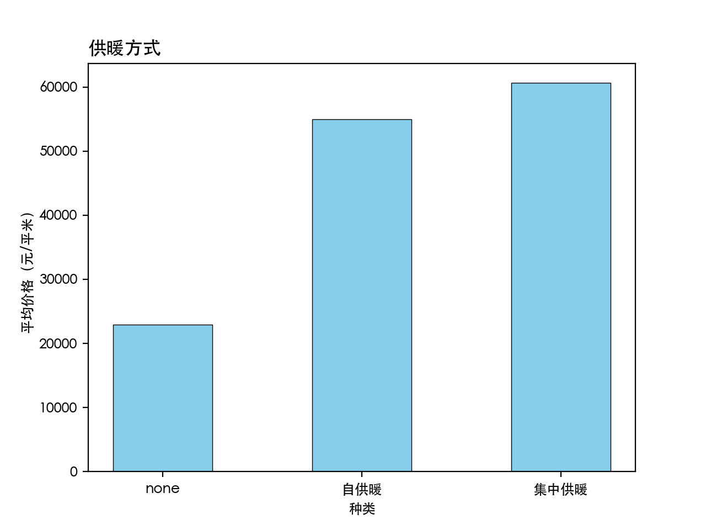
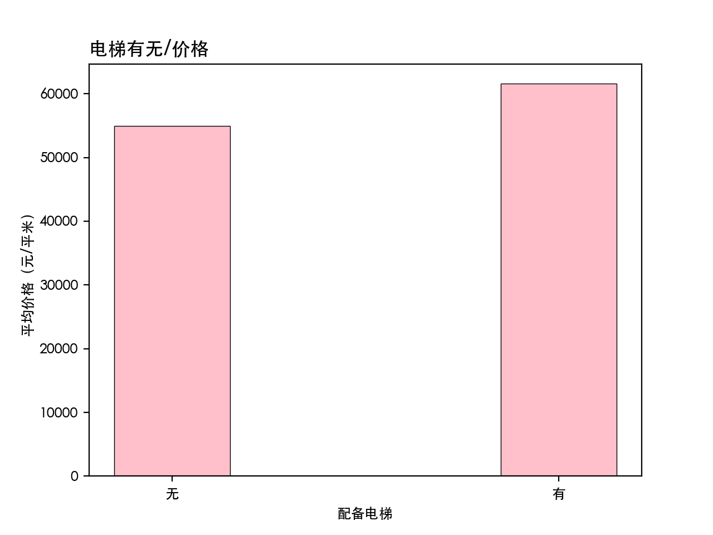
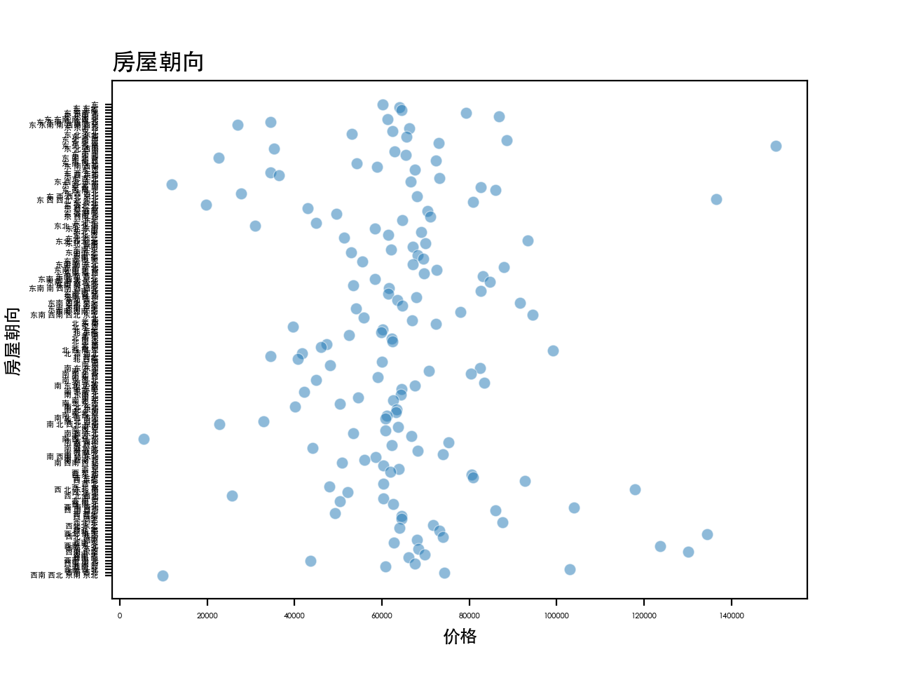
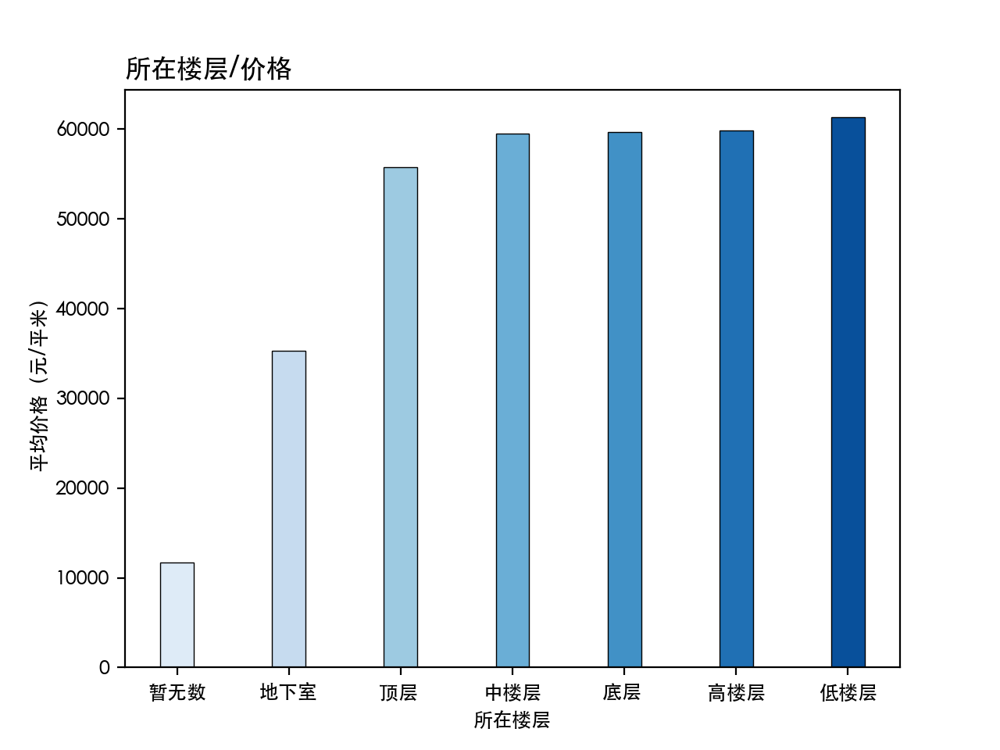

{kind=link}

清华大学经济管理学院 经 01 金秀珉
Main Factors
grouped = data.groupby('big district name') plt.rcParams['font.family']='Heiti TC' plt.rcParams['font.size']=5 title_font = {'fontsize':12, 'fontweight':'bold'} colors = sns.color_palette('Blues',len(grouped)) plt.pie(values,startangle=90,autopct='%.1f%%',colors = colors) plt.rc('legend',fontsize=4) plt.title("北京二手房数量百分比",fontdict=title_font,loc='left') plt.legend(district) plt.show()
朝阳 has the largest number of rooms in sales, accounting for 24.1%. I described this distribution using pie graph and the color gradient, the more rooms, the deeper color, emphasizing the proportion. 海淀, where Tsinghua University is located, occupied 8.7%, and ranked 5th among 17 districts in Beijing. What is prominent in Beijing's room distribution, 朝阳， 丰台， 通州， 大兴， this four districts already occupy over 50% of the whole Beijing rooms in sales. If you are interested in, you can check out Beijing map, you can see the size of each distrcit. Those four districts are adjacent to each other, located on the East-South part of Beijing.
In terms of the average price, 西城 is the top and 东城 is the second, and the closer it is to central Beijing, the higher the price is. 海淀 is followed by a narrow gap with the 东城.
Other Factors
aagroup = pd.DataFrame(data.groupby(['供暖方式'])['平均价格(元/平米）'].mean()).reset_index() print(aagroup) plt.rcParams['font.family']='Heiti TC' plt.rcParams['font.size']=9 colors = sns.color_palette('light:b',len(grouped)) plt.bar(aagroup['供暖方式'],aagroup['平均价格(元/平米）'],color='skyblue',width=0.5,edgecolor="black",linewidth=0.5) plt.title("供暖方式",fontdict=title_font,loc='left') plt.ylabel("平均价格（元/平米）") plt.xlabel("种类")
The presence or absence of an elevator did not make a big difference in the average price, but the rooms that have elevator formed finely higher average price than those don't have.
aagroup = pd.DataFrame(data.groupby(['配备电梯'])['平均价格(元/平米）'].mean()).reset_index() print(aagroup) x = np.arange(len(aagroup)) name = ['无','有'] plt.rcParams['font.family']='Heiti TC' colors = sns.color_palette('light:b',len(grouped)) plt.bar(aagroup['配备电梯'],aagroup['平均价格(元/平米）'],color='pink',width=0.3,edgecolor="black",linewidth=0.5) plt.title("电梯有无/价格",fontdict=title_font,loc='left') plt.ylabel("平均价格（元/平米）",fontsize=9) plt.xlabel("配备电梯",fontsize=9) plt.xticks(x,name)
The site did not clearly divide the direction of the room into eight, but divided it into more than 200 large numbers. Furthermore, the data could not be significantly analyzed because the divided criteria were not clearly stated, but this scatter plot shows more than 200 directions average price.
aagroup = pd.DataFrame(data.groupby(['房屋朝向'])['平均价格(元/平米）'].mean()).reset_index() print(aagroup) plt.rcParams['font.family']='Heiti TC' plt.rcParams['font.size']=4 title_font = {'fontsize':12, 'fontweight':'bold'} plt.title("房屋朝向",fontdict=title_font,loc='left') colors = sns.color_palette('Blues',len(grouped)) sns.scatterplot(data=aagroup,x='平均价格(元/平米）', y='房屋朝向', alpha=0.5) sns.scatterplot(c=colors) plt.ylabel('房屋朝向',fontsize=9) plt.xlabel('价格',fontsize=9) plt.show()
By slicing the data of original dataframe, i just extracted the information of which kind of floor the room is located. we can notice prominently the 地下 rooms have lower price, but 楼上 rooms have no significant difference. This might give us a notice that rather than the floor, the location(district) of each room is more important factor on the price formation.
data['所在楼层']=data['所在楼层'].str[:3] aagroup = pd.DataFrame(data.groupby(['所在楼层'])['平均价格(元/平米）'].mean()).reset_index() aagroup = aagroup.sort_values(by = ['平均价格(元/平米）'],ascending=True) print(aagroup) x = np.arange(len(aagroup)) plt.rcParams['font.family']='Heiti TC' colors = sns.color_palette('Blues',len(aagroup)) plt.bar(aagroup['所在楼层'],aagroup['平均价格(元/平米）'],color=colors,width=0.3,edgecolor="black",linewidth=0.5) plt.title("所在楼层/价格",fontdict=title_font,loc='left') plt.ylabel("平均价格（元/平米）",fontsize=9) plt.xlabel("所在楼层",fontsize=9) plt.xticks(x,aagroup['所在楼层']) plt.show()
Conclusion
The main factor that influences the increase of price is the district where rooms are located. The closer to the center of Beijing, more expensive rooms become. But, through analysis we can check out that there's clear preference on ground rooms（地上）rather than underground (地下）. Also, we can also heck that the existence of heating system is also important. The average price of rooms that don't have heating system is far below than the ones that have.